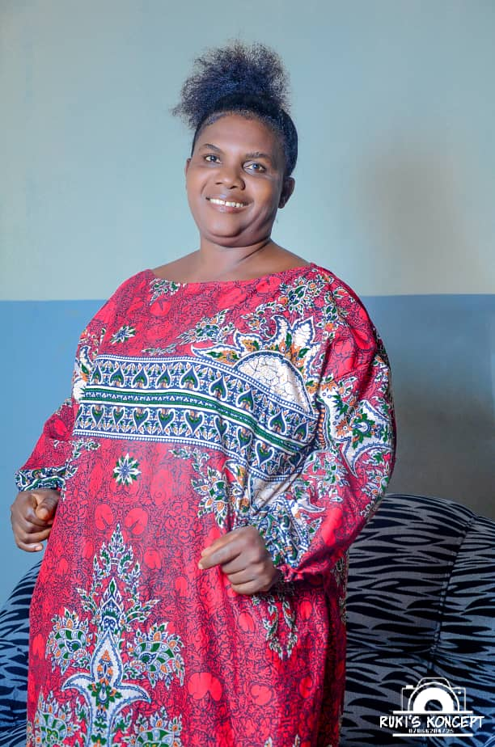
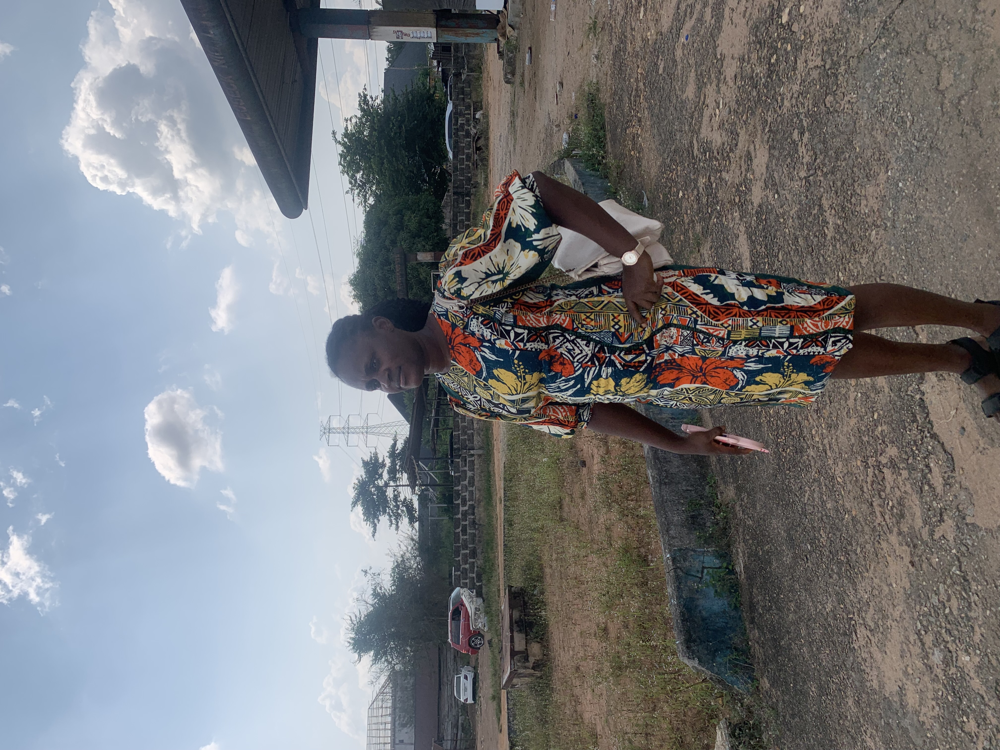
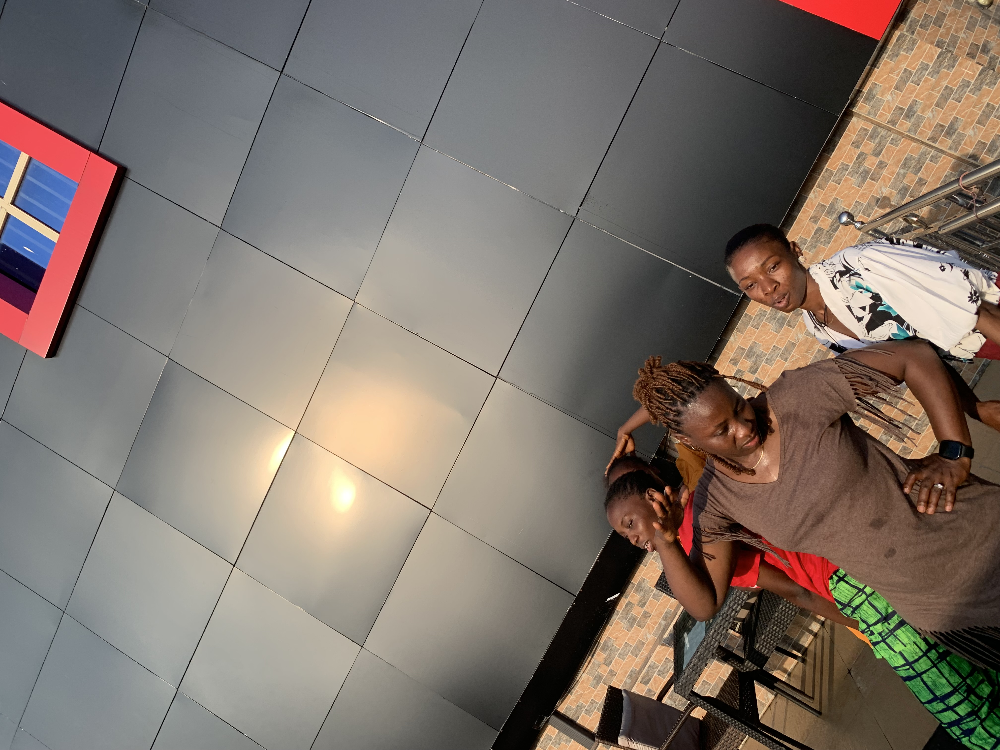
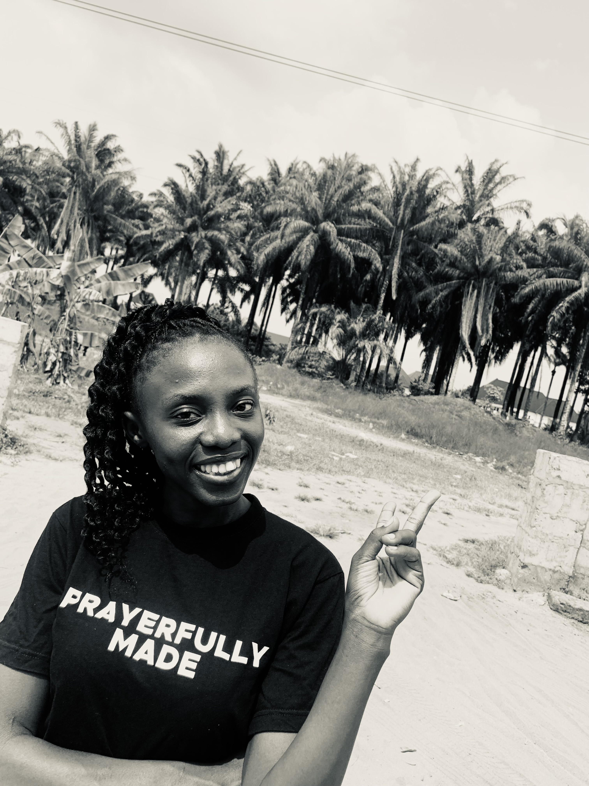

Celebrating 70 years
Loading the Story of a Remarkable Life...
Loading the Story of a Remarkable Life...
A Life of Faith . Family . Education . Service . Legacy
Celebrating
A devoted husband. A loving father. A proud grandfather. A distinguished educator. A faithful servant of God. A legacy that continues to inspire generations.
Days
Hours
Minutes
Seconds
"A life devoted to God, a heart devoted to family, and a legacy devoted to education."
Years of Life
Children
Grandchildren
Loving Wife
Retirement Age
Gave His Life to Christ
Born on 20 September 1956 in Ovade, Oghara, Ethiope West Local Government Area, Delta State, Mr. Prosper Tadjomajowe Emudianughe is a devoted Christian, husband, father, grandfather, educator and mentor whose life has inspired countless people through faith, integrity and service.
He was born to Mr. Onovughede Emudianughe and Mrs. Edemebejo Emudianughe. He grew up in a large extended family with six siblings from his mother's side, while his father had four wives.
Together with his beloved wife, Mrs. Anneth Otavero Emudianughe, he has built a loving home blessed with seven children and two wonderful grandchildren.
Born in Ovade, Oghara, Ethiope West, Delta State.
Gave his life to Jesus Christ during a Thursday Revival Service organised by Deeper Life Bible Church at the Redeemed Christian Church, Ebute Metta, Willoughby Street, Lagos.
Attended an adult evening school in Lagos due to hardship in his family and developed a passion for learning that would later shape both his career and his family.
Graduated from the Federal University of Technology, Owerri with a Bachelor's Degree in Polymer Chemistry.
Started his professional career at Horizon Fibres, Port Harcourt.
Married his Wife traditionally at her home town in Mosogar, Oghara, Ethiope West, Delta State.
Obtained a Master's degree in Pure and Industrial Chemistry from the University of Port Harcourt.
Served with distinction, became Head of Department of Science Laboratory Technology and retired as a Chief Lecturer at age 65.
Celebrating a lifetime of faith, family, educaton, leadership, and God's faithfulness.
Federal University of Technology, Owerri (FUTO)
University of Port Harcourt
Worked in Port Harcourt, applying his knowledge in Polymer Chemistry.
Dedicated decades to teaching, mentoring students, leading departments and shaping future scientists.
Retired with honour after years of distinguished service to education.
Together with his beloved wife, Mrs Anneth Otavero Emudianughe, Mr. Prosper Tadjomavowe Emudianughe have built a family founded on faith, discipline, education and love.
Father
Mother





"The greatest inheritance a parent can leave is not wealth, but a legacy of faith, integrity, education, and unconditional love."
In 1979, Mr. Prosper Tadjomavowe Emudianughe surrendered his life to Jesus Christ. That life-changing decision became the foundation upon which he built his marriage, family, career and service to humanity.
Throughout the years he faithfully served in the Deeper Life Bible Church, eventually becoing a pastor in Shrimp and Ajenasan Branches of the church, where he ministered with humility, compassion and dedication.
Although health challenges later required him to step down from active pastoral ministry, his commitment to worshipping and serving God has remained unwavering.
Faced serious health challenges with courage and unwavering faith. God sustained him through it all.
Experienced a difficult eye condition, yet God's grace preserved his sight and strengthened him.
Another season of testing became another testimony. His recovery continues to inspire everyone around him.


His pursuit of knowledge inspired every one of his children to value learning and seek excellence.
A loving husband, caring father, supportive grandfather and faithful leader of his home.
Christ has remained the cornerstone of his life, guiding him through every challenge.
Thousands of students have benefited from his wisdom, encouragement and leadership.
From Lecturer to Head of Department and Chief Lecturer, he served with excellence..
His greatest achievement is not measured by titles, but by the lives he has transformed.
We invite you to join us in celebrating the remarkable life of Mr. Prosper Tadjomavowe Emudianughe on his 70th birthday.
Share your prayers, memories, and wishes.
"Heavenly Father, thank You for the precious gift of Mr. Prosper Tadjomavowe Emudianughe. Thank You for preserving him, strengthening him, guiding him, and blessing him throughout these seventy wonderful years. We pray that You continue to pour out Your blessings upon him, granting him good health, joy, and peace. May his days be filled with love, laughter, and cherished moments with family and friends. Guide him in all his endeavors and let Your light shine through him as a testament to Your goodness. In Jesus' name, Amen."
With love from the Emudianughe Family